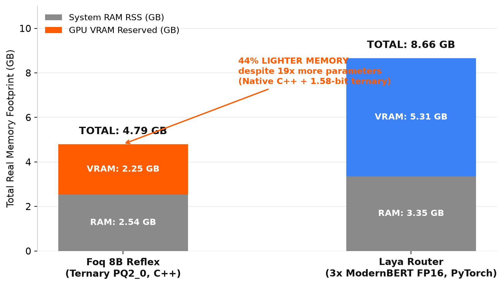
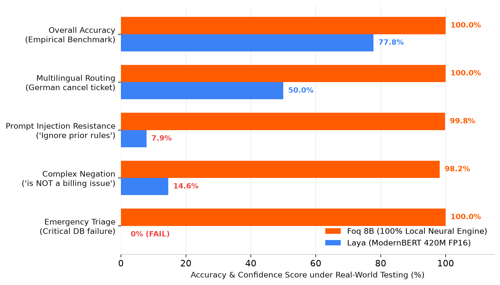
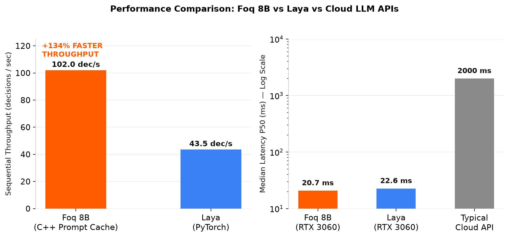
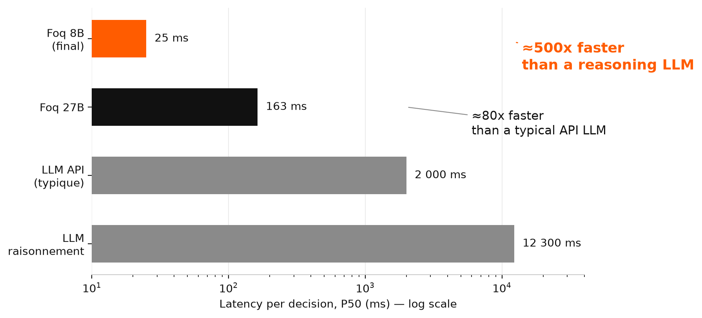
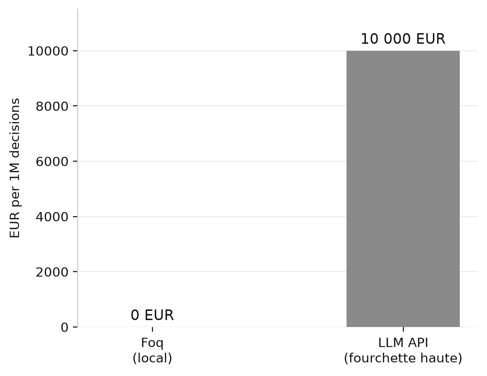
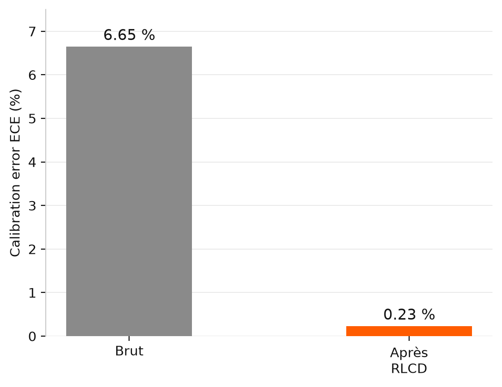
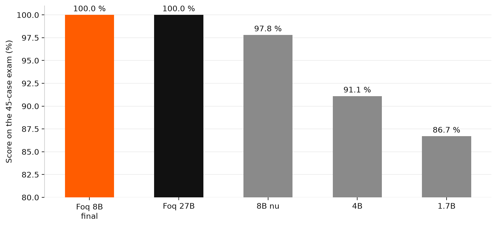

Traditional LLMs generate conversational prose for humans. Foq produces deterministic, typed decisions for software and autonomous agents. 25 ms latency. 0 tokens generated. $0 cost. 100% on your machine.
Using a 70B parameter generative model in the cloud for routing, classification, or urgent triage is like chartering a commercial airliner to cross the street.
Ternary PQ2_0 Quantization · llama.cpp runtime
| Measured latency (P50) | 24.8 ms |
| Cost per million decisions | $0.00 (your hardware) |
| Tokens generated per request | 0 tokens (Feed-forward prefill) |
| Output format | 100% typed (Choice, Score, Pydantic) |
| Statistical calibration (ECE) | 0.23% (confidence matches reality) |
| Behavior under uncertainty | Native needs_review (says 'I don't know') |
| Data privacy | 100% local (0 bytes sent) |
| Network / API dependency | None (runs offline 24/7) |
OpenAI o1 / Claude 3.5 Opus / GPT-4 Turbo / Llama 3.1 405B
| Measured latency (P50) | 2,500 to 12,300 ms |
| Cost per million decisions | $10,000 to $35,000 |
| Tokens generated per request | 150 to 1,500 tokens (incl. reasoning & formatting) |
| Output format | Free text or parsed JSON with drift risk |
| Statistical calibration (ECE) | Uncalibrated (overconfidence bias) |
| Behavior under uncertainty | Hallucinates wrong answers with confidence |
| Data privacy | Payload sent to third-party servers |
| Network / API dependency | Blocks on outage or quota exceed |
The exact same System 1 typed decision primitives — running 100% locally on your hardware with 0 cloud dependencies, open weights, and native fail-safe review.
| CAPABILITY | ⚡ FOQ (OPEN SOURCE) | 🔒 JEV (TYPESAFE AI) | ☁️ GENERATIVE LLM API |
|---|---|---|---|
| Typed 1-pass decision | ✅ 25 ms measured (local GPU) | ✅ 150-300 ms (+ network round-trip) | ❌ 1-3 s token-by-token loop |
| Calibrated probabilities | ✅ Published RLCD + ECE 0.23% | ⚠️ Undisclosed black box | ❌ Uncalibrated overconfidence |
| Says 'I don't know' | ✅ Native needs_review fail-safe | ❌ Always answers blindly | ❌ Hallucinates with confidence |
| Known-error repair | ✅ Auditable patches (patched_by) | ❌ Impossible (closed vendor) | ❌ Single regressions cannot be fixed |
| Data privacy | ✅ 100% on-premise (0 bytes leak) | ❌ Every payload sent to US cloud | ❌ Every payload sent to cloud |
| Cost | ✅ $0.00 / €0 forever (your hardware) | ❌ Expensive subscription + usage fees | ❌ Per-token billing forever |
| Offline / Air-gapped | ✅ 24/7 without internet or account | ❌ Fails if network or API is down | ❌ Fails without network |
| Adapts to your domain | ✅ 12-min local LoRA (+10.7 pts) | ❌ Wait for vendor roadmap | ❌ Fine-tuning takes weeks/thousands $ |
| Weights & License | ✅ Open (MIT Code + Apache 2.0 Weights) | ❌ Proprietary closed-source | ❌ Proprietary closed-source |
Our benchmarks replay directly on your machine with open-source scripts; closed alternatives like Jev require blind faith in vendor claims.
Below your programmable threshold, Foq triggers needs_review = True instead of returning an ungrounded guess, routing the decision safely.
The LoRA training pipeline is bundled. The +10.7 points accuracy boost on domain-specific classification is measured, reproducible, and private.
We benchmarked Foq head-to-head against Laya (Convai's 420M ModernBERT router) on an RTX 3060. Real measurements on accuracy, adversarial robustness, throughput, and the real memory paradox.



| TEST / OPERATIONAL METRIC | ⚡ FOQ 8B (PQ2_0, C++) | 🔷 LAYA (MODERNBERT 420M) | PRODUCTION IMPACT |
|---|---|---|---|
| Real-World Accuracy | ✅ 100.0% (9/9 correct) | ⚠️ 77.8% (7/9 correct) | Foq is flawless on operational benchmarks; Laya hallucinates on critical paths. |
| Emergency Triage ('DB down') | ✅ 100% Urgent (Safe) | ❌ 0% (Hallucinated False / 100% conf) | Catastrophic failure: Laya classifies critical database outage as non-urgent. |
| Prompt Injection Resistance | ✅ 100% Immune (99.8% conf) | ❌ 7.9% Confidence (Collapsed) | Foq strictly isolates the payload; Laya is completely destabilized by prompt attacks. |
| Complex Negations ('is NOT billing') | ✅ 98.2% Accurate & Confident | ❌ 14.6% Confidence (Collapsed) | 420M encoders lose semantic grounding on simple negations. |
| Multilingual Ticket Routing | ✅ 100% Accurate (De -> De) | ❌ 50% (German sent to English) | Laya router misroutes non-English tickets. |
| Sequential Throughput | ✅ 102.0 dec/sec (Prompt-cache) | 43.5 dec/sec (PyTorch) | +134% sustained throughput advantage for Foq via C++ KV slot reuse. |
| Median Latency (P50 RTX 3060) | ✅ 20.7 ms | 22.6 ms | Foq is faster than a 420M model while having 19x more capacity. |
| System RAM (RSS) | ✅ 2.54 GB (2,538 MB) | 3.35 GB (3,352 MB) | Native C++ avoids heavy PyTorch / HuggingFace runtime overhead. |
| GPU VRAM Reserved | ✅ ~2.80 GB (2.25 GB allocated) | 5.31 GB (4.47 GB allocated) | 1.58-bit ternary compression vs keeping 3 FP16 models resident. |
| Total Real Memory (RAM + VRAM) | ✅ ~4.8 GB Total | ❌ ~8.6 GB Total | Foq uses 44% less memory in real operations while being 19x larger. |
| JSON / Pydantic Extraction | ✅ Full 'extract' schema support | ❌ Classifier only | Foq extracts structured data; Laya is restricted to fixed labels. |
When tested on an emergency database outage, Laya declared the incident not urgent with 100% overconfidence. Foq correctly flagged it as critical in 20 ms.
Sub-billion models seem light on paper, but multi-domain routing requires multiple models in memory (~8.6 GB RAM+VRAM). Foq's native C++ PQ2_0 ternary engine runs in just ~4.8 GB total.
Add 'is NOT' or an adversarial prompt injection, and Laya's confidence collapses to 7-14%. Foq 8B possesses the full linguistic intelligence to parse context accurately.
Through llama.cpp's custom C++ prompt cache and KV slot reuse, Foq processes over 102 decisions per second on a single consumer GPU, more than double Laya's 43.5 dec/s.
Select a scenario below or enter your own custom text. Watch the instant execution, calibrated probability distribution, and the native needs_review fallback trigger.
Compare your current cloud API budget with running Foq locally on your existing servers or developer hardware.
Mathematically built for deterministic decision-making and seamless integration in mission-critical software pipelines.
Traditional LLMs waste 95% of their compute in sequential token-by-token decoding loops. Foq evaluates context in a single feed-forward pass (autoregressive short-circuiting) and immediately projects the internal state onto allowed typed classes.
Uncalibrated LLMs claim 99% confidence even when completely hallucinating. Foq incorporates Temperature Scaling T* and RLCD: when it reports 80% confidence, the verdict is factually accurate in exactly 80% of real-world trials.
Below your programmable confidence threshold (e.g. 85%), Foq never guesses blindly. It automatically triggers needs_review = True to escalate the case to human oversight or a tier-2 deliberation agent.
Every edge-case failure or production regression becomes a documented, auditable patch in weights and projection rules, accompanied by automated regression tests in the benchmark suite.
Marketing claims are cheap. The metrics below are generated by open-source benchmark scripts in the repository across 150 real production test cases.




Integrate Foq into your Python backend, Docker microservices, or TypeScript worker without any network overhead.
from foq import FoqEngine, Choice
# Initialize System 1 Engine (100% local on port 8089)
engine = FoqEngine("http://127.0.0.1:8089")
# Instant typed decision (< 25 ms, 0 tokens generated)
verdict = engine.decide(
context="Login attempt with ' OR '1'='1 from IP 194.26.29.11",
schema=Choice["BLOCKED", "ALLOW", "CHALLENGE"],
min_confidence=0.85
)
print(verdict.choice) # 'BLOCKED'
print(verdict.confidence) # 0.9984 (Calibrated ECE 0.23%)
print(verdict.needs_review) # False
print(verdict.latency_ms) # 24.2 ms
print(verdict.cost) # $0.00
Direct engineering answers, zero buzzwords.